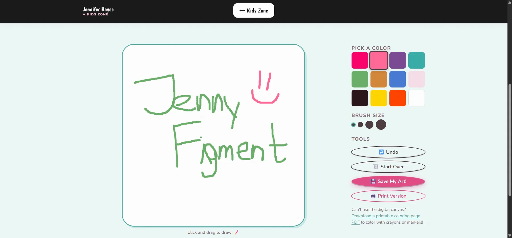
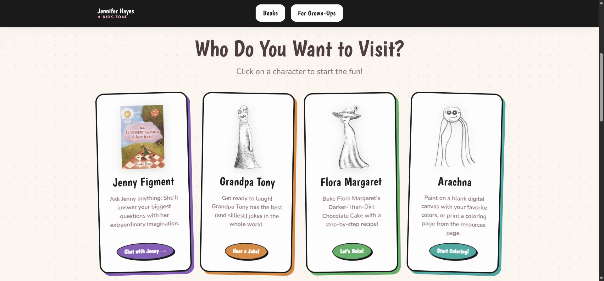
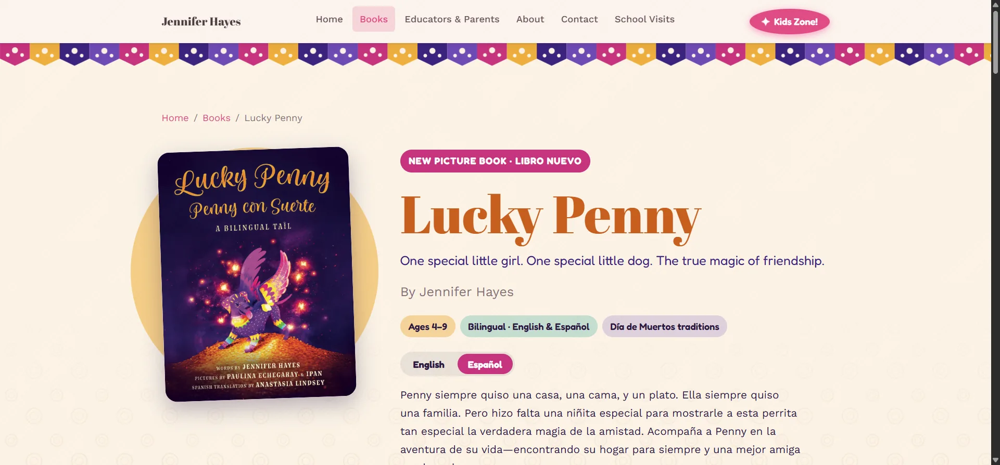
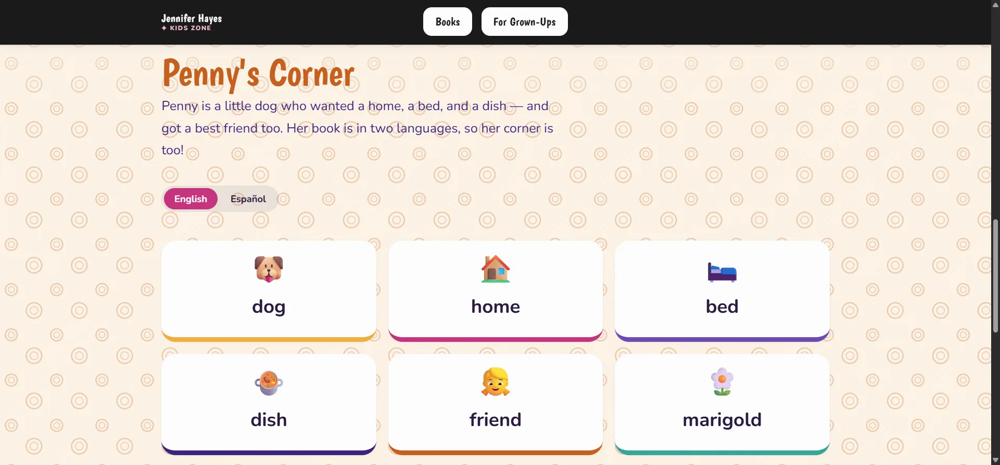
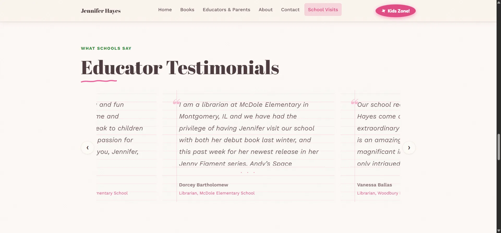

Overview
Jennifer Hayes writes the Jenny Figment books. Her site has to sell books, but it also has to book school visits, hand teachers a lesson plan they can print, and give a seven-year-old something to do that isn't a purchase. I rebuilt it as three tracks running off one design system, hand-written in HTML, CSS, and JavaScript with nothing else in the stack.
Before → after
The clearest way to show what changed isn't a screenshot, it's the menu. Everything else on this page follows from the difference between these two lists.
Before
One flat menu
- Home
- School Visit Information
- Parent and Teacher Guide
- Media Kit for Schools, Bookstores, and Press
- Bookish Events
- Extraordinary Kids Campaign
- Leave a Review!
Seven links in a single row, ordered by when each thing was added rather than by who needed it. A parent, a seven-year-old, and a school librarian all arrived at the same list in the same order.
After
Three audience paths
- For kidsKids Zone — four activities, its own color, its own door
- For readers & parentsHome · Books · About
- For schoolsEducators & Parents · School Visits · Contact
The same content, sorted by who came for it. Each path carries its own accent color, and the Kids Zone gets a separate entry point entirely, so a child never has to read a menu written for adults.
Who the menu is for
The old order was chronological — each book launch added a link and nothing was ever taken away, which is how nearly every author site ends up. Reordering by audience meant deciding what the site is for before deciding what goes on it. That was the longest part of the project and the part with the least code in it.
Where the proof lives
Reviews and press coverage are what actually sell a book and win a school visit, and they were one undifferentiated link among seven. They now sit on the two pages where the decision actually gets made — the homepage and the school-visits page — as real text in a carousel rather than a destination you have to go looking for.
A separate door for kids
Kids Zone stopped being a menu item and became a different mode: its own accent color, its own root class, a rounder typeface, and a confirmation step before any link leaves the site. Serving a seven-year-old and a booking enquiry through the same navigation was the one thing the old structure could never do well.
Inside the site
The Kids Zone is the part I'd point at first. It's four activities tied to four characters from the books — a coloring canvas, a joke generator, a recipe stepper, and a Q&A with Jenny herself — and it's deliberately walled off from the rest of the site. It gets its own color, its own root class, a rounder typeface, and a confirmation modal on any outbound link, so a kid clicking something that leads off-site gets asked first.
The coloring canvas is the hardest of the four to get right, and the one where the decisions are easiest to see.

A canvas has a fixed logical resolution — 600 × 600 here — but renders at whatever size CSS hands it. Every pointer event therefore arrives in the wrong coordinate space and gets rescaled against the element's measured size before a single stroke lands. Touch listeners are registered non-passively too, or the page scrolls out from under a child trying to draw.
Twelve fixed swatches rather than a color picker. A seven-year-old can't produce a combination that looks broken, and the palette is drawn from the same character accent tokens the rest of the site themes with.
Undo walks a stack of fifteen canvas snapshots and disables itself at the bottom of it — which is why the button is live in this shot and greyed out on an empty canvas. Fifteen is a memory ceiling, not a design one; full-canvas bitmaps add up quickly.
A printable PDF sits under the canvas for anyone whose device can't give them a usable drawing surface. The activity degrades to crayons rather than to nothing, which for a kids' page matters more than it would anywhere else.
The bilingual work shows up in two places, which is the argument for building it as a system rather than a one-off. Lucky Penny is a dual-language picture book, so its page carries the full English and Spanish text; Penny's Corner, over in the Kids Zone, reuses the same toggle for a vocabulary game. One control, two contexts, no duplicated machinery.
The other two tracks are quieter and do the commercial work. Educators get a hub of printable activity PDFs with no login in the way; schools get a visits page where the testimonials sit beside the booking form rather than filed under a menu item nobody clicks. Each track carries its own accent color, driven by one page-level custom property rather than a second set of components.
The rest of the site, briefly




The problem
The site I inherited had done its job. It had grown a page at a time as books came out, which is how most author sites end up — each launch adds a link, nobody ever removes one, and after four books the menu is a list of everything that has ever happened.
What it couldn't do was tell its visitors apart. Every page was reachable from the same flat row of links, in the same order, in the same voice, whether you were a child looking for a game or a media specialist trying to find a booking rate. The most valuable thing on the whole site — the review quotes and press coverage that actually sell books and win school visits — sat in the middle of that list with no more prominence than anything else.
So the brief I wrote for myself wasn't "make it look better." It was: work out who actually shows up here, what each of them came to do, and give each one a path that doesn't make them wade through the other two. Everything else — the design system, the activities, the color themes — came out of answering that.
Highlights
- 01
Audience-based IA: three tracks instead of one menu. Kids Zone is sequestered behind its own theme and its own root class, with a confirmation modal intercepting outbound links so a child gets asked before they leave the site.
- 02
A design system in plain CSS — around sixty custom properties, a fully fluid clamp() type scale, and five character accent colors. A single page-accent variable gives Books, Educators, and Kids Zone distinct color moods without a second copy of any component.
- 03
Five interactive activities in roughly 530 lines of vanilla JavaScript, including a coloring canvas with a fifteen-state undo stack and PNG export, and a joke deck that reshuffles with Fisher-Yates when it runs out.
- 04
A bilingual page for Lucky Penny, built as an ARIA tab pattern with roving tabindex. Switching languages also pauses any video or audio in the panel being hidden, and posts a pause command to YouTube embeds so a hidden translation can't keep playing underneath.
- 05
Accessibility built in rather than bolted on: skip links, semantic landmarks, aria-labelledby on every section, focus returned to the trigger on modal close, and prefers-reduced-motion honored in the design system's own stylesheet, not just in JavaScript.
Under the hood
There is no framework here, and no build step for the JavaScript — nine files, 1,133 lines, loaded with plain script tags. That was a deliberate constraint. The site is hosted on shared cPanel hosting and will outlive my involvement with it, so I wanted something that a future developer could open and understand without first installing anything, and that wouldn't break because a dependency moved on without me.
The cost of that choice shows up immediately in the header and footer, which have to be identical across every page and have no include mechanism to make them so. That problem is old enough to have a boring solution, and I wrote the boring one.
Deep dive — a 43-line build step instead of a static site generator
Two partials hold the real header and footer, with {{PAGE_CURRENT}} tokens marking where aria-current="page" should land. A Node script reads them, substitutes the token for whichever page it's writing, then finds the existing header in each target file and replaces it in place — matching everything between the skip link and the opening <main> tag.
const nextWithHeader = original.replace(
/\s*<a href="#main-content" class="skip-link">[\s\S]*?<main id="main-content">/,
`\n${withCurrent(headerTemplate, target.current)}\n\n <main id="main-content">`
);No dependencies, no config, no watcher — node tools/sync-layout.mjs and it's done. It is also honestly limited: it covers the five top-level pages and not the eleven nested ones, because nested pages need ../ prefixes on every link and the script has no path-rewriting logic. Those are still synced by hand, which is the kind of half-solution that works fine right up until it doesn't.
The coloring canvas was the piece I expected to be simple and wasn't. A canvas has a fixed logical resolution — 600 × 600 here — but it renders at whatever size CSS gives it, so every pointer event arrives in the wrong coordinate space and has to be rescaled before it means anything. Touch made it harder: the listeners have to be registered non-passively so the handler is allowed to cancel the default, or the page scrolls away underneath a child trying to draw on it.
Deep dive — the carousel that refuses to scroll the page
The testimonials carousel is a real scrollable container, not a JavaScript transform, which means touch swiping is free and keyboard scrolling works without being reimplemented. Finding the centered card is then just geometry: measure each card against the viewport center with getBoundingClientRect() and take the nearest.
Navigation deliberately uses scrollBy on the container rather than scrollIntoView on the card. scrollIntoView is the obvious call and it's wrong here — it scrolls the nearest scrollable ancestor too, so clicking "next" on a testimonial would yank the whole page. The comment in the source says exactly that, mostly so I don't forget and change it back.
The last third of the project was almost entirely invisible work. Clean URLs meant hand-writing Apache rewrites: a 301 to strip .html from anything that asks for it, an internal rewrite to serve the file when it doesn't, and a filename check ordered ahead of the directory match so that /books resolves to books.html rather than the books/ directory sitting next to it with the same name. Then cache-busting on the stylesheets, the Formspree wiring for three forms, and an iOS navigation bug that took seven attempts to pin down.
"Nearly half the commits in the final stretch went to things no visitor will ever notice — URL rewrites, cache busting, and a mobile nav bug that only appeared on iOS. That work is invisible when it's right and the only thing anyone sees when it's wrong."
Reflection
The thing I'd change first is the one I already know about. There are no responsive images anywhere on this site, no srcset, and no lazy loading — and it ships 39MB of assets, including a 5.7MB illustration and a 3MB book cover that also serves as the social preview image. On a school's wifi that's a real cost, and it's the gap between a site that works and a site that's actually fast. I know exactly what the fix is; I ran out of engagement before I did it.
The design system is what I'd keep. Committing to custom properties and one page-accent variable early meant that when a fifth book arrived four months later with a bilingual requirement nobody had planned for, adding it was a new page and a set of tokens rather than a rewrite. That's the first time I've built something where coming back to it months later was genuinely easy, and it was a lesson in the value of deciding things once, properly, at the start.
The other lesson was about scope. This was five months of part-time work for a client who is a friend's mother, agreed on a handshake, with no written scope and no deposit. The site is something I'm proud of. The way I ran the project is the part I'd do differently, and I've since written down what's included, what isn't, and what happens when it changes.
Tech stack